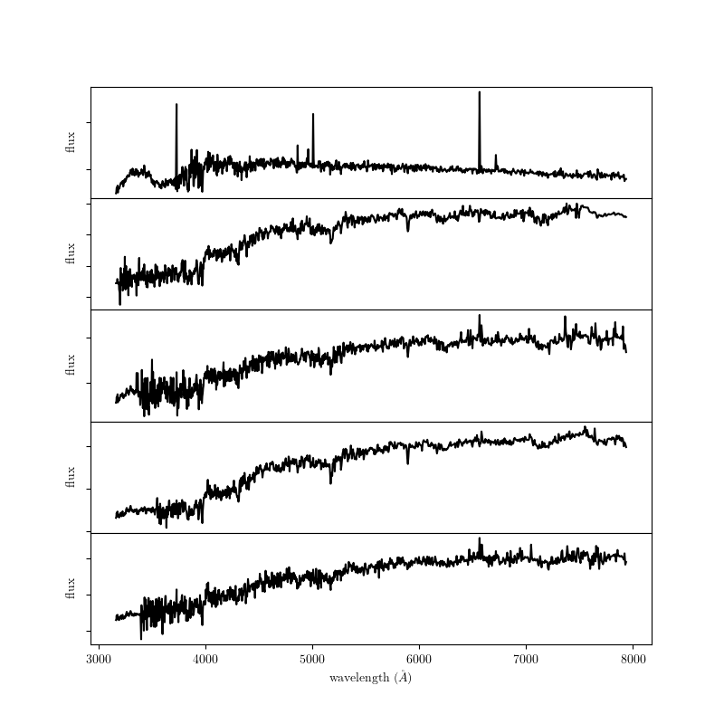

Corrected Spectra¶
The script examples/datasets/compute_sdss_pca.py uses an iterative PCA technique to reconstruct masked regions of SDSS spectra. Several of the resulting spectra are shown below.
downloading PCA-processed SDSS spectra from http://www.astro.washington.edu/users/vanderplas/spec4000.npz to /home/vanderplas/astroML_data
Downloading http://www.astro.washington.edu/users/vanderplas/spec4000.npz
[= ] 695.0kb / 27.15Mb
[== ] 1.36Mb / 27.15Mb
[=== ] 2.04Mb / 27.15Mb
[==== ] 2.71Mb / 27.15Mb
[===== ] 3.39Mb / 27.15Mb
[====== ] 4.07Mb / 27.15Mb
[======= ] 4.75Mb / 27.15Mb
[======== ] 5.43Mb / 27.15Mb
[========= ] 6.11Mb / 27.15Mb
[========== ] 6.79Mb / 27.15Mb
[=========== ] 7.47Mb / 27.15Mb
[============ ] 8.14Mb / 27.15Mb
[============= ] 8.82Mb / 27.15Mb
[============== ] 9.50Mb / 27.15Mb
[=============== ] 10.18Mb / 27.15Mb
[================ ] 10.86Mb / 27.15Mb
[================= ] 11.54Mb / 27.15Mb
[================== ] 12.22Mb / 27.15Mb
[=================== ] 12.90Mb / 27.15Mb
[==================== ] 13.57Mb / 27.15Mb
[===================== ] 14.25Mb / 27.15Mb
[====================== ] 14.93Mb / 27.15Mb
[======================= ] 15.61Mb / 27.15Mb
[======================== ] 16.29Mb / 27.15Mb
[========================= ] 16.97Mb / 27.15Mb
[========================== ] 17.65Mb / 27.15Mb
[=========================== ] 18.32Mb / 27.15Mb
[============================ ] 19.00Mb / 27.15Mb
[============================= ] 19.68Mb / 27.15Mb
[============================== ] 20.36Mb / 27.15Mb
[=============================== ] 21.04Mb / 27.15Mb
[================================ ] 21.72Mb / 27.15Mb
[================================= ] 22.40Mb / 27.15Mb
[================================== ] 23.08Mb / 27.15Mb
[=================================== ] 23.75Mb / 27.15Mb
[==================================== ] 24.43Mb / 27.15Mb
[===================================== ] 25.11Mb / 27.15Mb
[====================================== ] 25.79Mb / 27.15Mb
[=======================================] 26.47Mb / 27.15Mb
[========================================] 27.15Mb / 27.15Mb
[=========================================] 27.15Mb / 27.15Mb
# Author: Jake VanderPlas <vanderplas@astro.washington.edu>
# License: BSD
# The figure is an example from astroML: see http://astroML.github.com
import numpy as np
import matplotlib.pyplot as plt
from astroML.datasets import sdss_corrected_spectra
#------------------------------------------------------------
# Fetch the data
data = sdss_corrected_spectra.fetch_sdss_corrected_spectra()
spectra = sdss_corrected_spectra.reconstruct_spectra(data)
lam = sdss_corrected_spectra.compute_wavelengths(data)
#------------------------------------------------------------
# Plot several spectra
fig = plt.figure(figsize=(8, 8))
fig.subplots_adjust(hspace=0)
for i in range(5):
ax = fig.add_subplot(511 + i)
ax.plot(lam, spectra[i], '-k')
if i < 4:
ax.xaxis.set_major_formatter(plt.NullFormatter())
else:
ax.set_xlabel('wavelength $(\AA)$')
ax.yaxis.set_major_formatter(plt.NullFormatter())
ax.set_ylabel('flux')
plt.show()